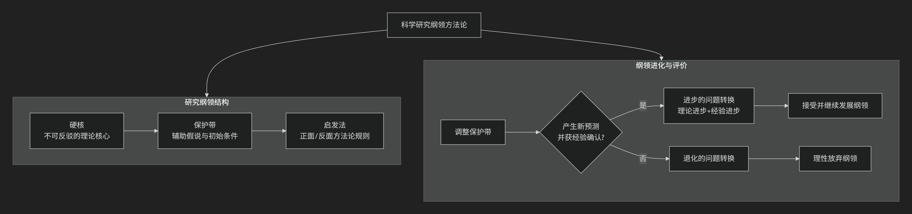

Imre Lakatos
基于伊姆雷·拉卡托斯（Imre Lakatos）科学哲学核心思想。
伊姆雷·拉卡托斯是一位极具影响力的科学哲学家，他的思想可以看作是在 卡尔·波普尔的证伪主义 和 托马斯·库恩的历史主义 之间进行的一次精妙的综合与超越。他试图在波普尔的 理性主义 （强调逻辑和批判）与库恩的 历史主义 （强调科学实践的社会历史维度）之间找到一条中间道路。
他的核心思想可以概括为： 提出“科学研究纲领方法论”，认为科学的评价单位不是单个理论，而是具有内在结构的“研究纲领”；科学进步与否的关键在于研究纲领是否能持续产生“进步的问题转换”，而非即时性的证伪。
拉卡托斯的核心思想体系可以通过以下框架图清晰地展示其结构与动态过程：

一、核心单位：科学研究纲领
拉卡托斯认为，波普尔将单个理论作为检验单位过于天真，库恩的“范式”又过于模糊和心理学化。他提出了一个更精细的结构化单位—— 科学研究纲领。
如上图左侧所示，一个研究纲领由三个基本部分组成：
硬核：这是纲领 不可反驳的核心理论，是研究者的共同承诺。例如，牛顿纲领的硬核是牛顿三定律和万有引力定律。根据方法论规则，硬核是受到保护的，不容许被实验直接反驳。放弃硬核就意味着放弃整个研究纲领。
保护带：由一系列 辅助假说、初始条件 等构成。它的功能是 保护硬核免受反驳。当观察或实验与预测不符时，科学家不会归咎于硬核，而是通过调整保护带（如修改辅助假说、检查实验设备、引入新概念）来消化反常。
启发法：一套方法论规则，指导科学家如何发展纲领。
反面启发法：规定 哪些路径要避免 ——“不要将矛头指向硬核”。它规定了保护带的任务。
正面启发法：规定 哪些路径要遵循 ——一套如何发展、完善和复杂化保护带的计划和建议。它引导科学家预见新现象、开发新实验，是纲领的“动力引擎”。
二、进步与退化的衡量标准：问题转换
这是拉卡托斯理论最核心的贡献，即如何 理性地 评价一个研究纲领是进步的还是退化的。如上图右侧流程所示，关键在于评估其“问题转换”的性质。
问题转换：指研究纲领在发展过程中，通过调整保护带来应对挑战和消化反常的整个过程。
进步的问题转换：一个研究纲领被认为是 进步的，必须同时满足两个条件：
理论上的进步：调整后的新保护带能够 预测到新颖的事实，即那些在旧保护带下未曾预料到、甚至看似不可能的事实。
经验上的进步：这些 新预测中至少有一部分得到了实验的确认。
例子：爱因斯坦的广义相对论预测了光线在引力场中弯曲（新颖预测），后由爱丁顿的日食观测所证实（经验确认），这就是一个典型的进步问题转换。
退化的问题转换：如果一个研究纲领只能 事后诸葛亮式地 通过特设性调整（即仅为解释已知反常而缺乏新预测的调整）来勉强应付，而无法做出任何成功的新预测，那么它就处于 退化的 状态。
三、科学竞争的理性图景
拉卡托斯描绘了一幅比库恩更理性、比波普尔更符合历史的科学竞争图景。
竞争与并存：科学史上通常不是只有一个纲领，而是 多个研究纲领并存和竞争。一个进步的纲领会吸引年轻、有创造力的科学家，而一个退化的纲领则会逐渐失去支持者。
“理性取代”而非“信仰转变”：科学的更替不是库恩所说的、近乎宗教皈依的“范式转换”，而是一个 更理性的过程。科学家有理由放弃一个长期退化、停滞不前的纲领，转而加入一个不断取得进步问题转换的纲领。然而，他也承认，一个暂时退化的纲领可能通过创造性的转变而“卷土重来”，因此不应过早地宣判其“死刑”。
—
核心要义总结
理论维度 |
核心命题 |
关键概念与贡献 |
|---|---|---|
科学结构论 |
科学的评价单位是”科学研究纲领”，它具有”硬核-保护带-启发法”的精致结构。 |
科学研究纲领、硬核、保护带、正面/反面启发法 |
科学进步观 |
科学进步取决于”问题转换”的性质：能持续产生新颖预测并被确认的纲领是进步的。 |
进步的问题转换、退化的问题转换、理论进步、经验进步 |
科学发展动力学 |
科学史是研究纲领竞争的历史，理性取代源于长期进步性优于退化性。 |
纲领竞争、理性取代、科学理性 |
影响与意义
拉卡托斯的思想影响深远：
精妙的综合：他成功地将波普尔的批判理性主义和库恩的历史敏感性结合起来，提供了更贴近科学实际运作的模型。
方法论价值：他的理论为科学史研究提供了强大的分析工具，可以用来理性地重构历史上的科学争论。
批判性遗产：他揭示了科学中“特设性调整”的危险，为区分“伪科学”和“处于低谷的科学”提供了更精细的标准。
总而言之，伊姆雷·拉卡托斯的核心思想在于，他是一位 “科学的理性历史学家”。他教导我们，不能孤立地、静止地评判一个理论，而应将其置于一个动态发展的 研究纲领 中，看它是否具有 持续的启发力 和 预测新事物的能力。他的哲学是对科学理性的一份更复杂、更深刻但也更充满希望的辩护。
- Grok
- 1. The Hard Core and Protective Belt: Judicial Dogma as an Impenetrable Core with Ad Hoc Shields
- 2. Progressive vs. Degenerative Programmes: The Case as a Crisis of Judicial Stagnation
- 3. Programme Competition and Falsification’s Demise: Suppressed Rival Paradigms in the Legal Arena
- Conclusion: Lakatos’s Lens on the Case—A Degenerative Stasis on the Brink of Crisis
- Gemini
- Copilot
- Deepseek
- Qwen